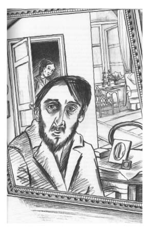

25 Mart
Beyaz bir kış günü
Dün yazdıklarıma şöyle bir göz attım ve az daha hepsini yırtıp atacaktım. Sanırım hikâyem fazlasıyla duygusal ve gereksiz ayrıntılarla dolu. Bununla birlikte, anımsadıklarımın geri kalanı, Lermontov’un söylediği türden eski yaraları kaşıyınca duyulan zevk ve acı karışımı tuhaf bir teselli dışında hiç de hoşa gidecek şeyler değil. Ama insan nerede duracağını bilmeli. İşte bu yüzden artık yazacaklarım aşırı duygusallıktan uzak olacak.
Kır gezintisinden sonraki bir hafta boyunca Liza’daki değişim her gün daha da belirginleşirken benim durumum daha iyiye gitmedi. Daha önce de söylediğim gibi bu değişimi kendi lehime yorumlamıştım... Münzevi ve ürkek insanların talihsizliği –gururları onları ürkek yapar– şudur ki, gözlerini dört açmalarına karşın hiçbir şey göremezler ya da gördükleri halde boyalı gözlüklerle bakıyormuşçasına her şeyi yanlış görürler. Kendi fikirlerinden ve kendi gözlerinden her seferinde çelme yerler. İlk tanıştığımızda Liza tıpkı bir çocuk gibi rahat ve güvenle yaklaşıyordu bana; tavırlarında çocuksu bir sevgiden daha fazlası olduğu bile söylenebilirdi... Fakat tam da bu tuhaf ve ani değişimin akabinde, kısa bir kafa karışıklığı dönemi sonrası yanımda rahatsızlık duymaya, farkında olmadan bana yüz çevirmeye başladı, aynı zamanda melankolik ve dalgın biri haline geldi. Bekliyordu... ama neyi? Bilmiyordu... Bense... daha önce dediğim gibi, bu değişimden oldukça memnundum... Evet, Tanrı şahidim, nasıl derler, zevkten dört köşeydim. Yerimde başkası olsa kesin oyuna gelir, aldanırdı... Gururdan nasibini almayan kim var ki? Tüyleri yolunmuş ve artık güçten düşmüş kanatlarımı indirmek zorunda kaldığımda meselenin zamanla açıklık kazandığını söylememe gerek bile yok.
Liza’yla aramdaki yanlış anlaşılma o hafta boyunca sürdü – bunda şaşıracak bir şey yok: yıllarca süren yanlış anlaşılmaların tanığı olmak benim kaderimdi zaten. Bu arada, tek başına hakikat yeter, sözünü kim söylemişti? Yalan en az hakikat kadar yaşamın parçasıdır, belki daha bile fazla. O hafta esnasında bile ara sıra içimi bir şeylerin kemirdiğini çok iyi anımsıyorum... fakat dediğim gibi, benim gibi münzevi insanlar gözlerinin önünde ne olup bittiğini anlamakta beceriksizdir. Peki ya aşk doğal bir duygu mudur? İnsanın âşık olması doğal mıdır? Aşk bir hastalıktır ve hastalık kural tanımaz. Kalbimde bazen tatsız bir çarpıntı duyuyordum; evet ama, zaten içimdeki her şey allak bullak olmuştu. Böyle durumlarda bir insan neyin doğru, neyin yanlış olduğunu nasıl bilebilir? Ve her bir hissin ayrı ayrı sebebini ve önemini?
Ne fark eder, bütün bu yanlış anlamalar, sezinlemeler ve umutlar eninde sonunda olacağına varır.
Bir gün –sabah saat on iki civarı– Bay Ojogin’in salonuna girmek üzereyken dolgun ve yabancı bir ses duydum, kapı açıldı ve ev sahibine eşlik eden yirmi-yirmi beş yaşlarında orta boylu ince bir adam belirdi; koltukta duran askeri paltosunu hemencecik omuzlarına attı, bana sürtünerek geçerken umursamazca şapkasının ucuna dokundu; Kirill Matveiç’e içten bir selam verdi ve mahmuzlarını şakırdatarak kayboldu.
Ojogin’e, “Bu da kim?” diye sordum.
Endişeli bir surat ifadesiyle, “Prens N.,” diye cevapladı. “Orduya asker toplamak için Petersburg’dan yollamışlar. Uşaklar nerede,” diye öfkeyle devam etti, “neden paltosu tutulmadı?”
Salona geçtik.

“Çok oldu mu geleli?” diye sordum.
“Dün geldiğini söylediler. Ona burada kalmasını teklif ettim ama kabul etmedi. Yine de düzgün bir adama benziyor.”
“Ne zamandır sizinle?”
“Yaklaşık bir saattir. Onu Olimpiada Nikitişna’yla tanıştırmamı istedi.”
“Tanıştırdınız mı?”
“Elbette.”
“Peki Lizaveta Kirillovna da onunla...”
“Elbette, onunla da tanıştı.”
Bir süre duraksadım.
“Uzun süre kalacak mı, bir bilginiz var mı?”
“Evet, sanırım iki haftadan fazla kalması gerekiyormuş.”
Sonrasında Kirill Matveiç giyinmek için aceleyle gitti.
Salonda bir süre volta attım. Prens N.’nin, yaşadığımız çevreye yeni gelen birine duyduğumuz türden bir düşmanlık duygusu dışında üzerimde özel bir izlenim bırakıp bırakmadığını hatırlamıyorum. Belki de Moskovalı adsız sansız ve utangaç bir memurun Petersburglu göz alıcı bir memura duyduğu türden kıskançlıkla karışık bir duyguydu. “Prens,” diye düşünceye daldım, “başkentten gelen bir sonradan görme, kesin bize tepeden bakacak...” Onu sadece bir anlığına görmüştüm, fakat eli yüzü düzgün, zeki ve cüretkâr biri olduğunu hemencecik anladım. Odayı bir süre arşınladıktan sonra aynanın önünde durdum, cebimden tarağımı çıkardım, saçlarıma portrelik bir dağınıklık verdim ve hani olur ya, aniden yüzümü incelemeye daldım. Dikkatle burnumu incelediğimi hatırlıyorum; neredeyse bütün odayı yansıtan eğik aynanın karanlık derinliklerinde kapı açılıp birdenbire Liza’nın narin vücudu belirdiğinde, yumuşak ve belirsiz hatlara sahip çehremin bu parçasına bakmaktan zevk aldığım söylenemezdi. Neden hiç hareket etmeden aynı yüz ifadesini koruduğumu bilmiyorum. Liza başını öne uzatıp dikkatle bana baktı ve fark edilmemekten hoşnut birinin yaptığı gibi kaşlarını kaldırıp dudaklarını ısırdı, nefesini tutarak geri çekildi ve kapıyı aralık kalacak kadar çekti. Kapı hafiften gıcırdadı. Liza ürktü ve donup kaldı... Ben hâlâ kıpırdamadan duruyordum... Kapı kolunu tekrar tuttu ve ortadan kayboldu. Artık su götürür tarafı kalmadı: Liza’nın beni gördüğündeki yüz ifadesi; bir kez daha tatsız bir karşılaşmadan kaçma arzusundan başka bir şeyin seçilmediği yüz ifadesi, kimseye belli etmeden sıvıştığını düşündüğünde gözlerinin zevkten ışıldaması – tüm bunlar bu kızın beni sevmediğini bas bas bağırıyordu. Uzunca bir süre aynadaki yansıması beyaz bir lekeye benzeyen hareketsiz ve hantal kapıdan gözlerimi alamadım. Asık suratıma gülümsemeye çalıştım – başımı eğdim, eve döndüm ve kendimi sedire attım. Kalbim öylesine ağırlaşmıştı ki ağlayamıyordum bile... ağlayacak ne vardı ki zaten? Ellerimi göğsüme birleştirip ölü gibi uzanarak, “Nasıl olur?” diye durmadan tekrarladım – “Nasıl olur?” ... Acaba size nasıl geliyor bu “nasıl olur”? Acaba siz ne düşünüyorsunuz bu “nasıl olur” hakkında?